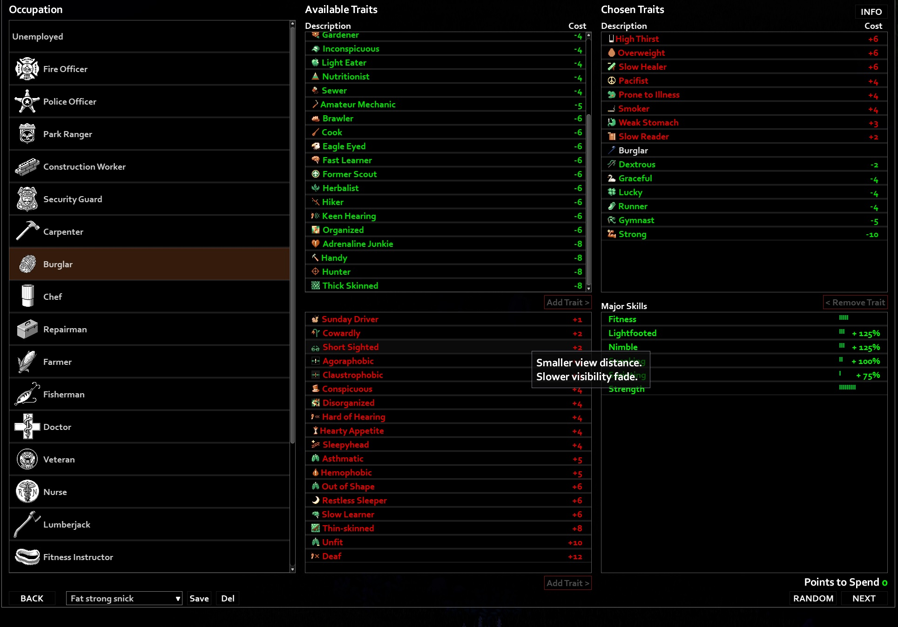

Profissões
Guia de Ocupações: Quem Você Era Antes do Fim?
O Sistema de Criação de Personagens
Em Project Zomboid, a sobrevivência começa antes mesmo de você pisar no mapa. Na tela de criação, você deve escolher o passado do seu personagem. O jogo utiliza um sistema de Pontos de Criação: profissões mais fortes e com mais habilidades técnicas custam pontos negativos, obrigando você a escolher Traços Negativos (defeitos como covardia, surdez ou fobia de lugares fechados) para equilibrar a balança.
Escolher uma profissão não define apenas as suas roupas iniciais, mas garante bônus permanentes de experiência naquela função. Um personagem que começa com pontos em Carpintaria, por exemplo, aprenderá a construir defesas muito mais rápido do que um sobrevivente comum.
As Melhores Profissões para Escolher
Principais
- Bombeiro (Firefighter): É uma das ocupações favoritas dos iniciantes. O bombeiro começa com excelentes níveis físicos de Força e Aptidão, além de um ponto na habilidade de Corrida. Ele consegue carregar mais itens na mochila e cansa muito menos ao golpear zumbis. Para melhorar, ele já começa o jogo vestindo a jaqueta e as calças de bombeiro, que oferecem uma das maiores proteções contra mordidas e arranhões do jogo.
- Policial (Police Officer): Se o seu objetivo é focar em armas de fogo no início do jogo, o policial é a escolha ideal. Ele possui bônus massivos em Pontaria e Recarga. Além disso, a profissão garante o traço exclusivo "Olhos de Águia", que aumenta o campo de visão periférica do personagem, ajudando a detectar zumbis tentando te pegar por trás.
- Carpinteiro (Carpenter): A água encanada e a energia elétrica da cidade vão acabar em poucas semanas. O carpinteiro é o profissional perfeito para lidar com isso, pois começa com três pontos em Carpintaria. Isso permite que ele construa paredes fortes de madeira, barricadas reforçadas nas janelas e, o mais importante, coletores de água da chuva para garantir a hidratação do grupo a longo prazo.
- Ladrão (Burglar): Uma escolha extremamente estratégica. O ladrão tem a habilidade única de fazer ligação direta em carros (hotwire) desde o primeiro segundo de jogo, sem precisar ler livros ou subir de nível. Ele também se move de forma muito mais silenciosa e tem mais chances de abrir janelas de casas trancadas sem quebrá-las, evitando fazer barulho desnecessário.
- Operário da Construção (Construction Worker): Uma profissão barata em pontos, mas muito poderosa. Ele começa com três pontos em Manutenção, que é a habilidade que impede suas armas (como machados e tacos de beisebol) de quebrarem rápido. Ele também ganha o traço "Espessura", que reduz drasticamente as chances de a pele do personagem ser perfurada por um zumbi ao sofrer um ataque.
Os Traços (Vantagens e Desvantagens)
Depois de escolher a profissão, você deve moldar a personalidade e o corpo do sobrevivente usando os traços:
- Traços Positivos Recomendados: "Destemido" (reduz o pânico ao ver zumbis), "Organizado" (aumenta a capacidade de espaço de todas as mochilas e baús do jogo) e "Leitor Rápido" (faz você devorar os livros de habilidades na metade do tempo).
- Traços Negativos Gerenciáveis: Para ganhar pontos extras, muitos jogadores escolhem defeitos que podem ser contornados, como " Fumante" (exige apenas encontrar cigarros e isqueiros para controlar o estresse), "Estômago Fraco" (basta nunca comer comida estragada) e "Estudante Lento" (reduz o ganho de experiência, mas te dá muitos pontos na tela de criação).
